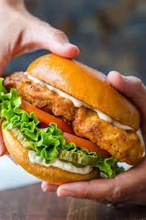

Slow Cooker Buffalo Chicken Sandwiches

Description
This crockpot Buffalo chicken is great for hearty sandwiches that will
please those who love Buffalo chicken wings.
This recipe is perfect for those days spent watching football. I like to
top these with blue cheese or ranch dressing.
Ingredients
- 4 skinless, boneless chicken breast halves
- 1 bottle Buffalo wing sauce, divided
- 1 package dry ranch salad dressing mix
- 6 hoagie rolls, split lengthwise
Directions
-
Place chicken breasts into the slow cooker; pour in 3/4 of the wing
sauce and ranch dressing mix.
- Cover and cook on Low for 6-7 hours
- Shred chicken in the cooker with 2 forks
- Pile shredded chicken and sauce onto hoagie rolls